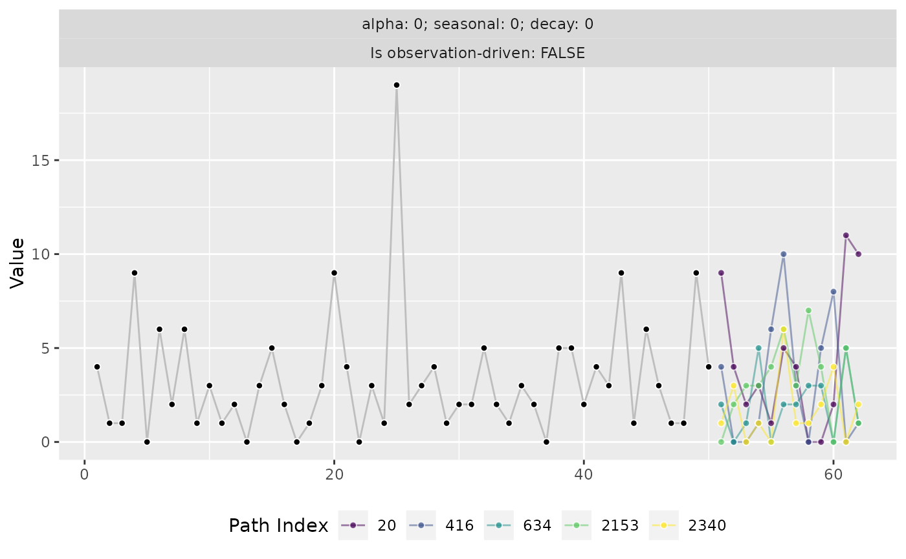

Postprocess to samples from a moment-matched negative-binomial distribution
Source:R/to_moment_matched_nbinom.R
to_moment_matched_nbinom.RdUse this function to postprocess samples from the forecast distribution to
samples from a negative binomial distribution that was fitted by
moment-matching (using mean and variance) to the input samples x. This is
useful to convert samples generated via a different innovation_function
like [draw_normal_with_zero_mean()] or [draw_bootstrap()] to a
count distribution.
Details
If the required forecast output are count data (as when forecasting the
demand for products), this can be better than using round() or similar to
preserve features of the forecast distribution.
Examples
x <- to_non_negative_with_identical_mean(
stats::rnorm(n = 10000, mean = 5, sd = 3)
)
y <- to_moment_matched_nbinom(x = x)
summary(x); stats::var(x)
#> Min. 1st Qu. Median Mean 3rd Qu. Max.
#> 0.000 2.953 4.911 4.974 6.853 17.089
#> [1] 7.94514
summary(y); stats::var(y)
#> Min. 1st Qu. Median Mean 3rd Qu. Max.
#> 0.000 3.000 5.000 4.928 7.000 19.000
#> [1] 7.82657
# Forecasting simple count data
set.seed(992)
y <- stats::rnbinom(n = 50, mu = 3, size = 3/2)
model <- learn_weights(
y = y,
alphas_grid = list_sampled_alphas(
n_target = 1000L,
include_edge_cases = TRUE
),
period_length = 12L,
loss_function = loss_rmse
)
forecast <- predict(
object = model,
horizon = 12L,
n_samples = 2501L,
observation_driven = FALSE,
innovation_function = draw_normal_with_zero_mean,
postprocess = to_moment_matched_nbinom
)
forecast$paths[1:5, ]
#> [,1] [,2] [,3] [,4] [,5] [,6] [,7] [,8] [,9] [,10] [,11] [,12]
#> [1,] 1 1 5 1 4 3 1 1 0 0 2 2
#> [2,] 4 1 0 2 3 2 2 2 5 6 1 0
#> [3,] 8 3 0 6 1 2 0 5 1 2 2 0
#> [4,] 2 0 6 4 7 1 0 4 3 6 4 0
#> [5,] 1 1 6 3 1 7 5 2 4 4 5 2
if (require("ggplot2")) {
autoplot(forecast)
autoplot(forecast, method = "paths")
}
